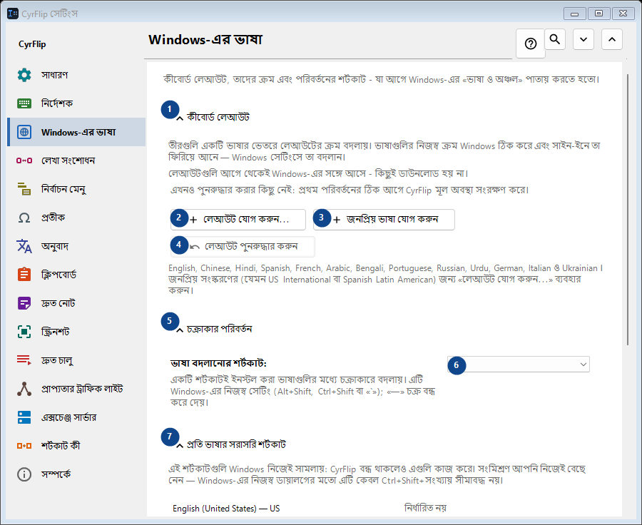
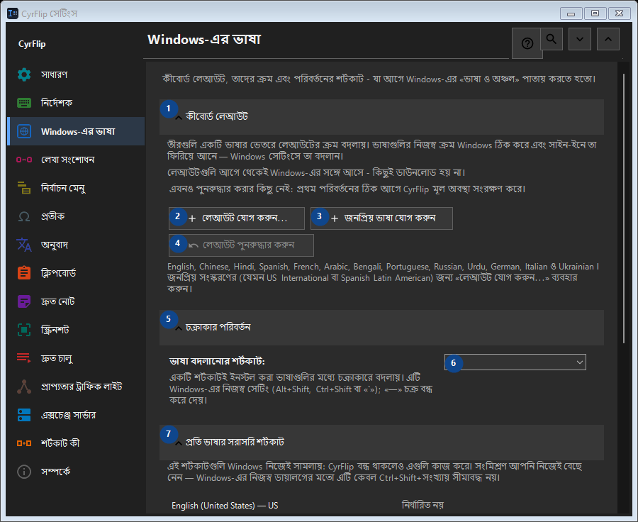

Windows-এর ভাষা
এর কাজ
কীবোর্ড লেআউট, তাদের ক্রম এবং পরিবর্তনের শর্টকাট - যা আগে Windows-এর «ভাষা ও অঞ্চল» পাতায় করতে হতো।


ব্যবহারের ক্রম
সেটিং সঙ্গে সঙ্গে প্রয়োগ হয়। নির্দিষ্ট ক্রম নেই; নিচের দলগুলি ব্যবহার করুন।
উপাদান
1. কীবোর্ড লেআউট
উল্লিখিত কাজের জন্য এই নির্দেশ ব্যবহার করুন। মেনে নেওয়ার আগে নিশ্চিতকরণ পড়ুন।
আপনার শর্টকাট2. লেআউট যোগ করুন...
উল্লিখিত কাজের জন্য এই নির্দেশ ব্যবহার করুন। মেনে নেওয়ার আগে নিশ্চিতকরণ পড়ুন।
আপনার শর্টকাট3. জনপ্রিয় ভাষা যোগ করুন
উল্লিখিত কাজের জন্য এই নির্দেশ ব্যবহার করুন। মেনে নেওয়ার আগে নিশ্চিতকরণ পড়ুন।
আপনার শর্টকাট4. লেআউট পুনরুদ্ধার করুন
এখনও পুনরুদ্ধার করার কিছু নেই: প্রথম পরিবর্তনের ঠিক আগে CyrFlip মূল অবস্থা সংরক্ষণ করে। এই উপাদান এখন উপলব্ধ নয়। আগে বৈশিষ্ট্য চালু করুন বা একটি এন্ট্রি বাছুন।
আপনার শর্টকাট5. চক্রাকার পরিবর্তন
উল্লিখিত কাজের জন্য এই নির্দেশ ব্যবহার করুন। মেনে নেওয়ার আগে নিশ্চিতকরণ পড়ুন।
আপনার শর্টকাট6. ভাষা বদলানোর শর্টকাট
পাশের লেবেল অনুযায়ী মান বাছুন বা লিখুন। এগোনোর আগে পরীক্ষা করুন।
আপনার শর্টকাট7. প্রতি ভাষার সরাসরি শর্টকাট
উল্লিখিত কাজের জন্য এই নির্দেশ ব্যবহার করুন। মেনে নেওয়ার আগে নিশ্চিতকরণ পড়ুন।
আপনার শর্টকাট8. নির্ধারণ করুন... - English (United States) - US
উল্লিখিত কাজের জন্য এই নির্দেশ ব্যবহার করুন। মেনে নেওয়ার আগে নিশ্চিতকরণ পড়ুন।
আপনার শর্টকাট9. মুছে ফেলুন - English (United States) - US
উল্লিখিত কাজের জন্য এই নির্দেশ ব্যবহার করুন। মেনে নেওয়ার আগে নিশ্চিতকরণ পড়ুন। এই উপাদান এখন উপলব্ধ নয়। আগে বৈশিষ্ট্য চালু করুন বা একটি এন্ট্রি বাছুন।
আপনার শর্টকাট10. নির্ধারণ করুন... - русский (Россия) - Russian
উল্লিখিত কাজের জন্য এই নির্দেশ ব্যবহার করুন। মেনে নেওয়ার আগে নিশ্চিতকরণ পড়ুন।
আপনার শর্টকাট11. মুছে ফেলুন - русский (Россия) - Russian
উল্লিখিত কাজের জন্য এই নির্দেশ ব্যবহার করুন। মেনে নেওয়ার আগে নিশ্চিতকরণ পড়ুন। এই উপাদান এখন উপলব্ধ নয়। আগে বৈশিষ্ট্য চালু করুন বা একটি এন্ট্রি বাছুন।
আপনার শর্টকাট12. শর্টকাট পুনরুদ্ধার করুন
এখনও পুনরুদ্ধার করার কিছু নেই: প্রথম পরিবর্তনের ঠিক আগে CyrFlip মূল অবস্থা সংরক্ষণ করে। এই উপাদান এখন উপলব্ধ নয়। আগে বৈশিষ্ট্য চালু করুন বা একটি এন্ট্রি বাছুন।
আপনার শর্টকাট13. Windows সেটিংস
উল্লিখিত কাজের জন্য এই নির্দেশ ব্যবহার করুন। মেনে নেওয়ার আগে নিশ্চিতকরণ পড়ুন।
আপনার শর্টকাট14. Windows সেটিংস খুলুন
Windows সেটিংস খোলে, যেখানে প্রদর্শনের ভাষা (অর্থাৎ Windows-এর নিজের অনুবাদ) ইনস্টল করা হয়।
আপনার শর্টকাট